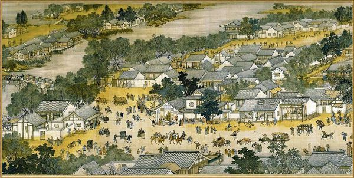
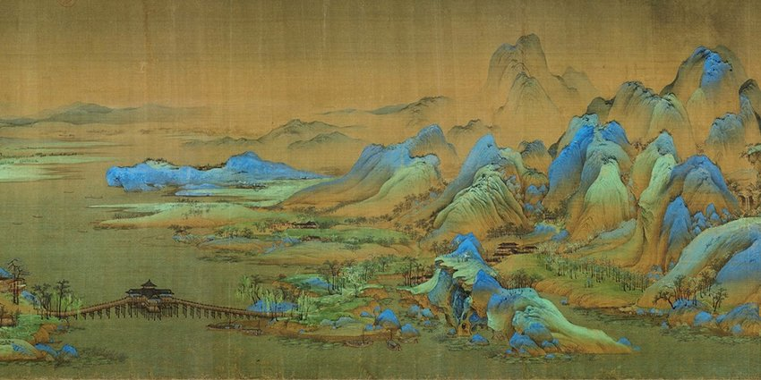
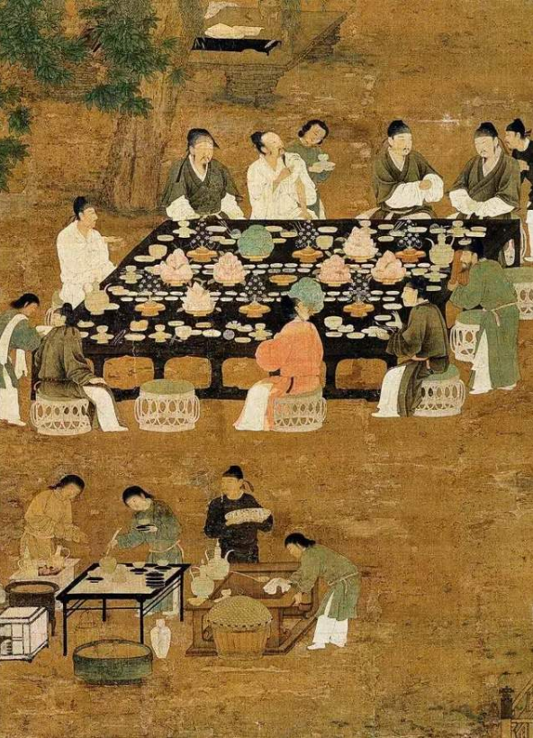
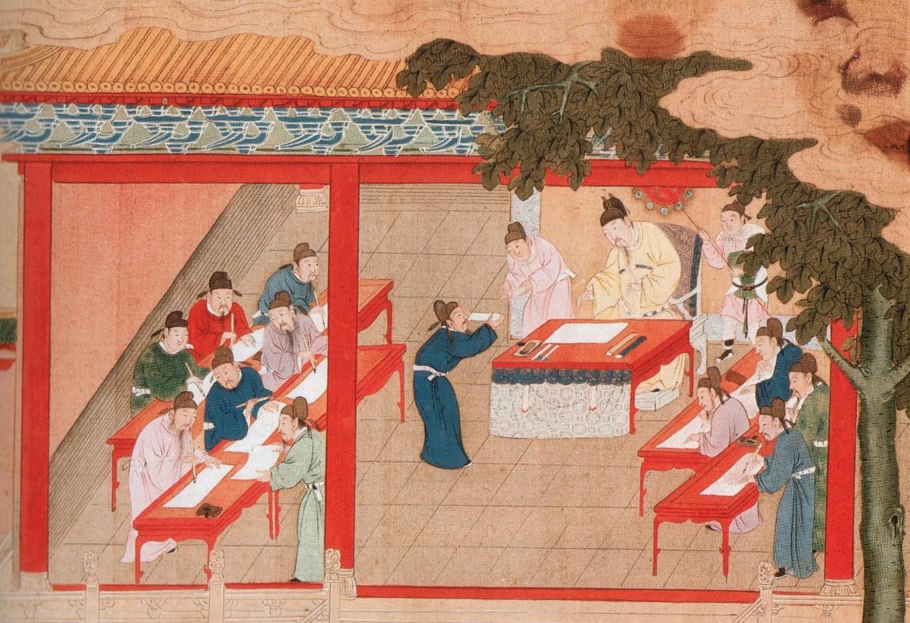

First part -- Suburban Area

On the right of the painting is a suburban scene surrounded by ample banyan trees.

Song cultural 1: Standardized Testing in Song

The peasant in Song dynasty lived a poor life, the only path for seeking a better life is through standardized examination
In the Song dynasty (960–1279) the imperial examinations became the primary method of recruitment for official posts.
The examinations were opened to adult Chinese males and more than a hundred palace examinations were held during the dynasty
The exam required candidates to compose a logically coherent essay by juxtaposing quotations from the Classics or sentences of similar meaning to certain passages.
This reflected the stress the Song placed on creative understanding of the Classics.
